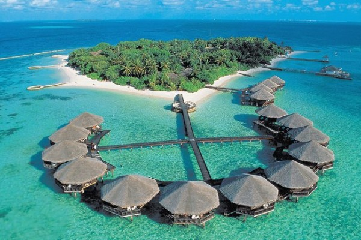

Sobat tiket pastinya udah tahu dong kalau Anak Gunung Krakatau punya pemandangan indah yang nggak ada duanya? “Induk” dari Anak Gunung Krakatau adalah Gunung Krakatau yang menghilang karena meletus dahsyat di tahun 1883.Saat ini, Anak Gunung Krakatau yang berlokasi di Selat Sunda menjadi cagar alam dengan pemandangan alam terindah di Indonesia. Ayo datang ke sini saat liburan tiba, sobat tiket!Selain Anak Gunung Krakatau, cagar alam ini juga memiliki 3 pulau kecil lainnya. Ada Pulau Panjang, Pulau Rakata, dan Pulau Sertung.
Potret dari Pantai Dreamland di Bali ini memang seindah pantai impian. Kalau kamu berkunjung ke Pantai Dreamland, kamu bakalan merasa kalau pantai di sebelah selatan Bali ini seperti pantai privat buatmu. Lokasi Pantai Dreamland dalam gambar pemandangan alam terindah ini adalah di Pecatu, Kecamatan Kuta Selatan, Kabupaten Badung, Bali. Pantai yang tersembunyi di bawah tebing terjal ini merupakan salah satu destinasi favorit bagi wisatawan, lho.Salah satu hal yang wajib banget kamu lakukan selama di sini yaitu menikmati keeksotisan senja yang seakan menutup harimu dengan keindahannya. Pastinya liburan kamu akan seru banget deh jika dihabiskan di Pantai Dreamland ini.
Kamu sudah pernah mendengar nama Danau Weekuri belum nih, sobat tiket? Danau yang berada di Provinsi Nusa Tenggara Timur ini bakalan bikin kamu terpesona dengan pemandangannya yang spektakuler! Danau Weekuri ini adalah sebuah laguna dengan air laut biru kehijauan yang jernih banget. Kebayang nggak sih kalau kamu berenang di Danau Weekuri pas liburan nanti? Sejatinya, danau ini merupakan sebuah laguna yang terbentuk dari air lautan lepas sekitar danau yang masuk melalui celah bebatuan karang.